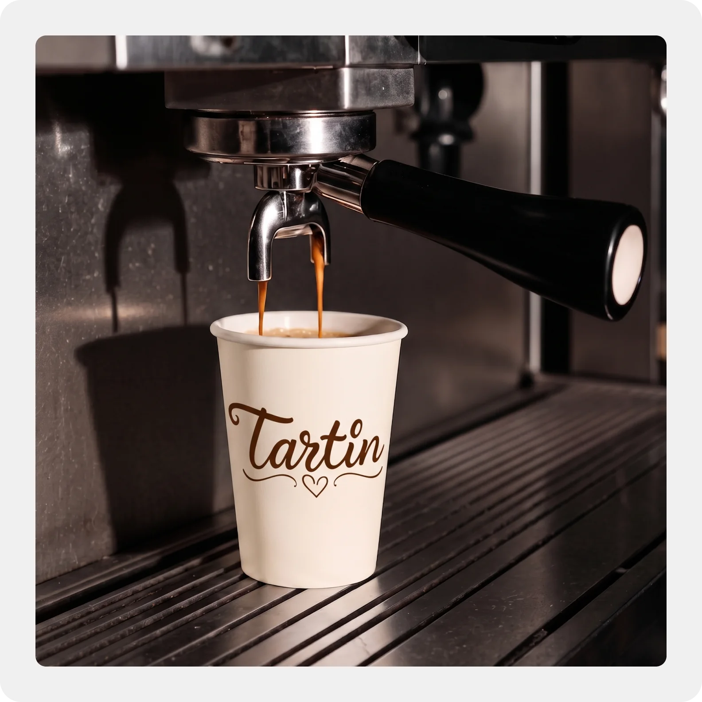
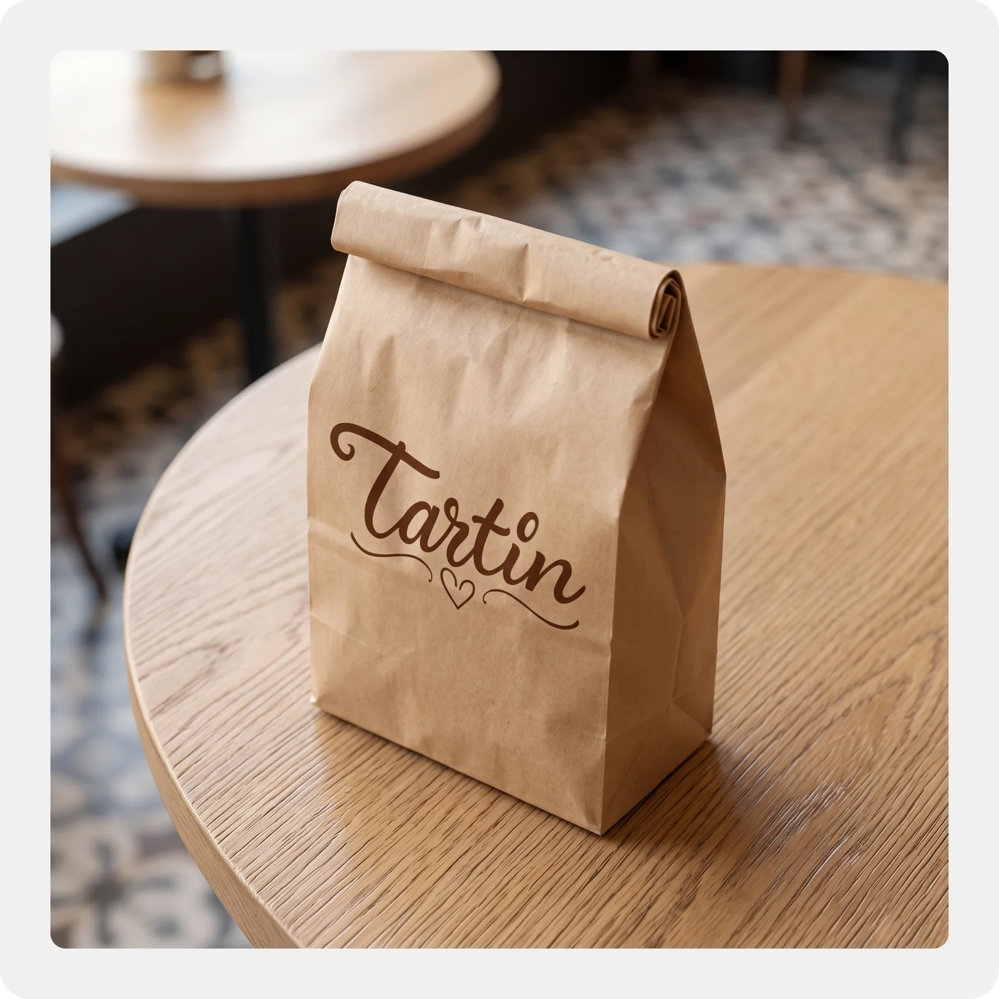
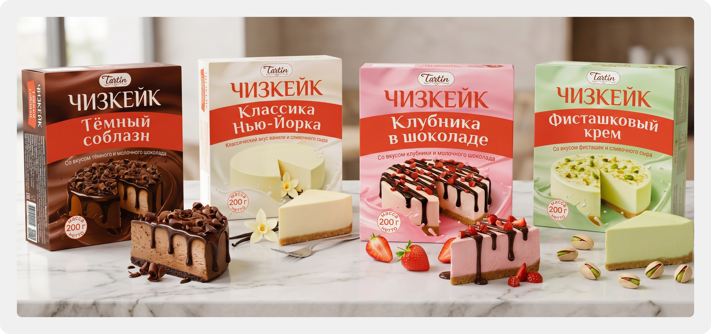
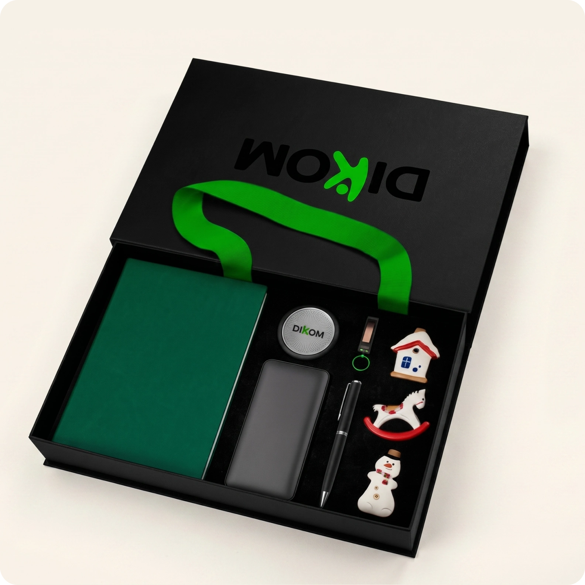
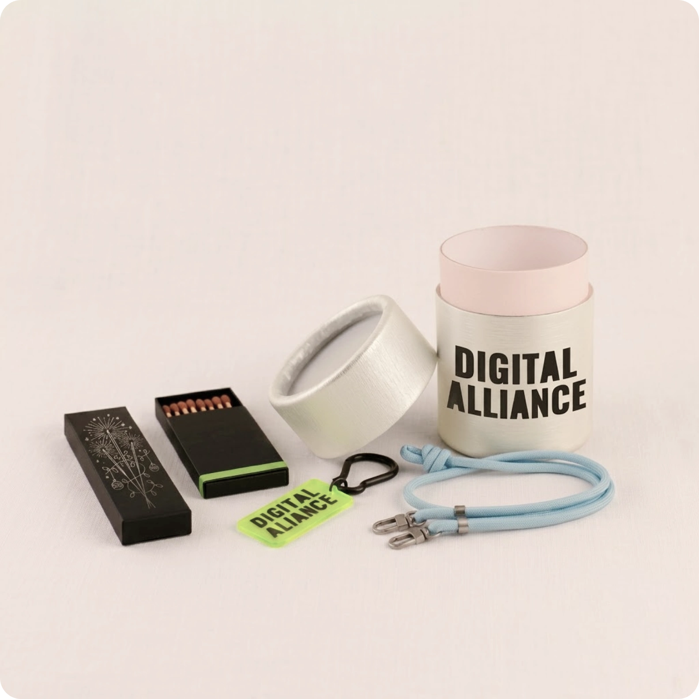
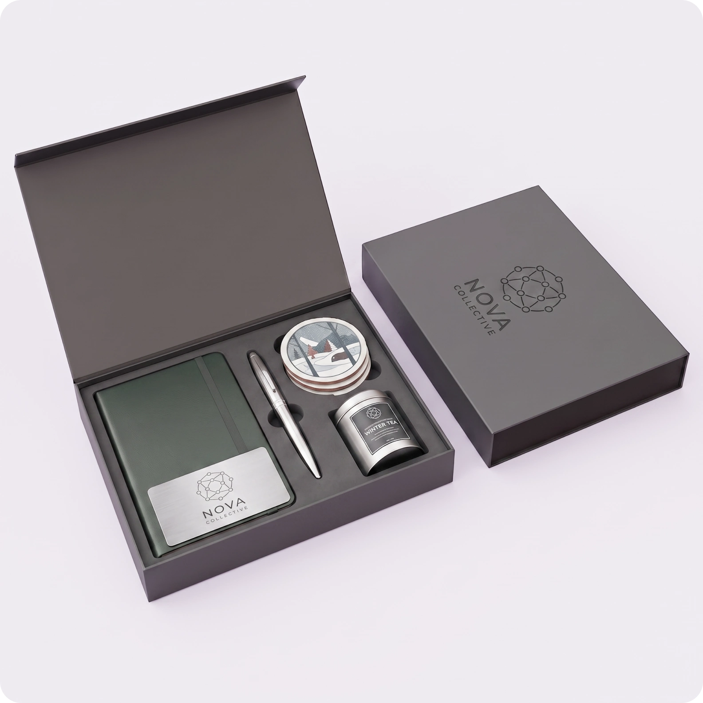

Дизайн упаковки, полиграфия и визуализация подарков
Кондитерское производство Tartin
Логотип и розничная этикетка-пломба для десертов
Клиент обратился ко мне по рекомендации от заказчика проекта с посудой URM. До этого кондитерская производила десерты только для кофеен и доставок еды, где индивидуальная упаковка не требовалась. При выходе в магазины появилась необходимость разработать логотип с нуля и создать серию этикеток под четыре вкуса чизкейков с жёсткими ограничениями по размерам.


Процесс работы
- Разработал несколько концепций логотипа с нуля, презентовал заказчику варианты и довёл выбранный концепт до финального векторного знака.
- Спроектировал модульный шаблон наклейки размером 13 на 3,5 сантиметра, которая одновременно работает как информационный носитель и как пломба контроля первого вскрытия на пластиковом контейнере.
- Чётко зонировал пространство этикетки по техническому заданию: выделил верхний блок под логотип, название и фото десерта, плашку «вилка внутри» и потребительскую информацию (состав по ГОСТ, КБЖУ, условия хранения).
- Выделил средний блок под штрихкод, QR-код и реквизиты производителя, оставив нижний сантиметр наклейки свободным для фиксации замка упаковки.
- Адаптировал дизайн под линейку из четырёх разных вкусов чизкейка, подобрав фоновые цветовые решения под конкретный десерт.
- Подготовил исходники к печати с учётом вылетов под обрез, цветовой модели CMYK и читаемости мелкого шрифта в блоке состава.

Корпоративные подарки Joy Inside
Визуализация подарочных наборов для коммерческих предложений
Компания занимается сборкой индивидуальных корпоративных подарков для бизнеса. Чтобы согласовывать наборы с заказчиками и презентовать идеи в коммерческих предложениях, требовалось наглядно показывать продукцию внутри коробок ещё до этапа физической сборки.


Процесс работы
- Использовал базовую фотографию открытой подарочной коробки и предоставленные изображения отдельных товаров для создания аккуратного фотомонтажа.
- Реалистично разложил предметы по индивидуальным ложементам, подогнал перспективу, тени и масштаб каждого объекта.
- Нанёс логотипы и фирменные элементы корпоративных клиентов на коробки и полиграфические вкладыши.
- Собрал серию из четырёх уникальных подарочных боксов с учётом правок заказчика для последующего размещения в презентациях компании.

Результаты
Оба проекта были сданы в оговорённые сроки с полным соблюдением технических ограничений печати и требований клиентов.
- Кондитерское производство запустило продажи линейки чизкейков в магазинах с тиражом наклеек, напечатанным без брака и дефектов верстки.
- Модульная структура этикетки позволила клиенту самостоятельно масштабировать систему на новые вкусы десертов в будущем.
- Компания Joy Inside получила комплект реалистичных визуализаций боксов, которые вошли в рабочие презентации для корпоративных заказчиков.